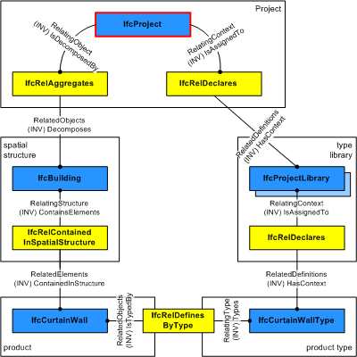

5.1.3.11 IfcProject
5.1.3.11.1 Semantic definition
IfcProject establishes the context for information to be exchanged or shared, and it may represent a construction project but does not have to. The IfcProject's main purpose in an exchange structure is to provide the root instance and the context for all other information items included.
The context provided by the IfcProject includes:
- the default units
- the geometric representation context for exchange structures including shape representations
- the project coordinate system
- the coordinate space dimension
- the precision used within the geometric representations
- optionally the indication of the true north
- optionally the map conversion between the project coordinate system and the geospatial coordinate reference system.
Formal Propositions
- There shall be at most one project within the exchange context. This is enforced by the global rule IfcSingleProjectInstance.
5.1.3.11.2 Entity inheritance
5.1.3.11.3 Attributes
| # | Attribute | Type | Description |
|---|---|---|---|
| IfcRoot (4) | |||
| 1 | GlobalId | IfcGloballyUniqueId |
Assignment of a globally unique identifier within the entire software world. |
| 2 | OwnerHistory | OPTIONAL IfcOwnerHistory |
Assignment of the information about the current ownership of that object, including owning actor, application, local identification and information captured about the recent changes of the object, |
| 3 | Name | OPTIONAL IfcLabel |
Optional name for use by the participating software systems or users. For some subtypes of IfcRoot the insertion of the Name attribute may be required. This would be enforced by a where rule. |
| 4 | Description | OPTIONAL IfcText |
Optional description, provided for exchanging informative comments. |
| IfcObjectDefinition (7) | |||
| HasAssignments | SET [0:?] OF IfcRelAssigns FOR RelatedObjects |
Reference to the relationship objects, that assign (by an association relationship) other subtypes of IfcObject to this object instance. Examples are the association to products, processes, controls, resources or groups. |
|
| Nests | SET [0:1] OF IfcRelNests FOR RelatedObjects |
References to the decomposition relationship being a nesting. It determines that this object definition is a part within an ordered whole/part decomposition relationship. An object occurrence or type can only be part of a single decomposition (to allow hierarchical structures only). |
|
| IsNestedBy | SET [0:?] OF IfcRelNests FOR RelatingObject |
References to the decomposition relationship being a nesting. It determines that this object definition is the whole within an ordered whole/part decomposition relationship. An object or object type can be nested by several other objects (occurrences or types). |
|
| HasContext | SET [0:1] OF IfcRelDeclares FOR RelatedDefinitions |
References to the context providing context information such as project unit or representation context. It should only be asserted for the uppermost non-spatial object. |
|
| IsDecomposedBy | SET [0:?] OF IfcRelAggregates FOR RelatingObject |
References to the decomposition relationship being an aggregation. It determines that this object definition is whole within an unordered whole/part decomposition relationship. An object definition can be aggregated by several other objects (occurrences or parts). |
|
| Decomposes | SET [0:1] OF IfcRelAggregates FOR RelatedObjects |
References to the decomposition relationship being an aggregation. It determines that this object definition is a part within an unordered whole/part decomposition relationship. An object definition can only be part of a single decomposition (to allow hierarchical structures only). |
|
| HasAssociations | SET [0:?] OF IfcRelAssociates FOR RelatedObjects |
Reference to the relationship objects, that associates external references or other resource definitions to the object. Examples are the association to library, documentation or classification. |
|
| Click to show 11 hidden inherited attributes Click to hide 11 inherited attributes | |||
| IfcContext (7) | |||
| 5 | ObjectType | OPTIONAL IfcLabel |
The object type denotes a particular type that indicates the object further. The use has to be established at the level of instantiable subtypes. |
| 6 | LongName | OPTIONAL IfcLabel |
Long name for the context as used for reference purposes. |
| 7 | Phase | OPTIONAL IfcLabel |
Current project phase, or life-cycle phase of this project. Applicable values have to be agreed upon by view definitions or implementer agreements. |
| 8 | RepresentationContexts | OPTIONAL SET [1:?] OF IfcRepresentationContext |
Context of the representations used within the context. When the context is a project and it includes shape representations for its components, one or several geometric representation contexts need to be included that define e.g. the world coordinate system, the coordinate space dimensions, and/or the precision factor. |
| 9 | UnitsInContext | OPTIONAL IfcUnitAssignment |
Units globally assigned to measure types used within the context. |
| IsDefinedBy | SET [0:?] OF IfcRelDefinesByProperties FOR RelatedObjects |
Set of relationships to property set definitions attached to this context. Those statically or dynamically defined properties contain alphanumeric information content that further defines the context. |
|
| Declares | SET [0:?] OF IfcRelDeclares FOR RelatingContext |
Reference to the IfcRelDeclares relationship that assigns the uppermost entities of included hierarchies to this context instance. |
|
5.1.3.11.4 Formal propositions
| Name | Description |
|---|---|
| CorrectContext |
If a RepresentationContexts relation is provided then there shall be no instance of IfcGeometricRepresentationSubContext directly included in the set of RepresentationContexts. |
|
|
| HasName |
The Name attribute has to be provided for IfcProject. It is the short name for the project. |
|
|
| NoDecomposition |
The IfcProject represents the root of the any decomposition tree. It shall therefore not be used to decompose any other object definition. |
|
|
5.1.3.11.5 Property sets
-
Pset_ProjectCommon
- ProjectType
- ProjectInvestmentEstimate
- FundingSource
- ROI
- NetEarnedValue
- PaybackPeriod
5.1.3.11.6 Concept usage
| Concept | Usage | Description | |
|---|---|---|---|
| IfcRoot (2) | |||
| Revision Control | General |
Ownership, history, and merge state is captured using IfcOwnerHistory. |
|
| Software Identity | General |
IfcRoot assigns the globally unique ID. In addition it may provide for a name and a description about the concept. |
|
| IfcObjectDefinition (9) | |||
| Classification Association | General |
Any object occurrence or object type can have a reference to a specific classification reference, i.e. to a particular facet within a classification system. |
|
| Aggregation | General |
No description available. |
|
| Approval Association | General |
No description available. |
|
| Constraint Association | General |
No description available. |
|
| Document Association | General |
No description available. |
|
| Library Association | General |
No description available. |
|
| Material Association | General |
No description available. |
|
| Material Single | General |
No description available. |
|
| Nesting | General |
No description available. |
|
| IfcContext (7) | |||
| Project Classification Information | General |
No description available. |
|
| Project Context | General |
No description available. |
|
| Project Document Information | General |
No description available. |
|
| Project Library Information | General |
No description available. |
|
| Project Representation Context 3D | General |
No description available. |
|
| Project Template Definitions | General |
No description available. |
|
| Project Type Definitions | General |
No description available. |
|
| Click to show 18 hidden inherited concepts Click to hide 18 inherited concepts | |||
| IfcProject (10) | |||
| Project Declaration | General |
The IfcProject is also the context for other information about the construction project such as a work plan. Non-product structures are assigned by their first level object to IfcProject using the IfcRelDeclares relationship. The IfcProject provides the context for work plans (or other non-product based) descriptions of the construction project. It is handled by the objectified relationship IfcRelDeclares. Figure 5.1.3.11.B illustrates the use of IfcProject as context for work plans or work schedules.  This concept can be applied to the following resources:
|
|
| Project Global Positioning | General |
The representation context of the project refers to a global positioning, i.e. the local engineering coordinate system of the project has a mapping to a defined projected coordinate system (a rectangular map coordinate system, as used in GIS systems) |
|
| Project Representation Context | General |
This concept can be applied with the following combinations: |
|
| Project Representation Context 2D | General |
No description available. |
|
| Project Template Definitions | General |
If a project includes custom properties for which end users should be able to view and/or edit, then backing property templates must be defined. Such templates define applicable data types and values. Applications should not allow modification of any custom properties (other than those defined within this specification) for which no template is available. |
|
| Project Units | General |
No description available. |
|
| Spatial Decomposition | General |
The IfcProject is used to reference the root of the spatial structure of a building or other construction project (that serves as the primary project breakdown and is required to be hierarchical). The spatial structure elements are linked together, and to the IfcProject, by using the objectified relationship IfcRelAggregates. The following constraints are applied to using the relationshio IfcRelAggregates in context of IfcProject
Figure 5.1.3.11.B illustrates project relationships with spatial structures, elements, and element type libraries.  This concept can be applied to the following resources:
|
|
| Project Global Positioning Geographic | General |
No description available. |
|
| Project Global Positioning Mapped | General |
No description available. |
|
| Property Sets for Contexts | General |
This concept can be applied to the following resources: |
|
5.1.3.11.7 Formal representation
ENTITY IfcProject
SUBTYPE OF (IfcContext);
WHERE
CorrectContext : NOT(EXISTS(SELF\IfcContext.RepresentationContexts)) OR
(SIZEOF(QUERY(Temp <* SELF\IfcContext.RepresentationContexts |
'IFC4X3_ADD2.IFCGEOMETRICREPRESENTATIONSUBCONTEXT' IN TYPEOF(Temp)
)) = 0);
HasName : EXISTS(SELF\IfcRoot.Name);
NoDecomposition : SIZEOF(SELF\IfcObjectDefinition.Decomposes) = 0;
END_ENTITY;